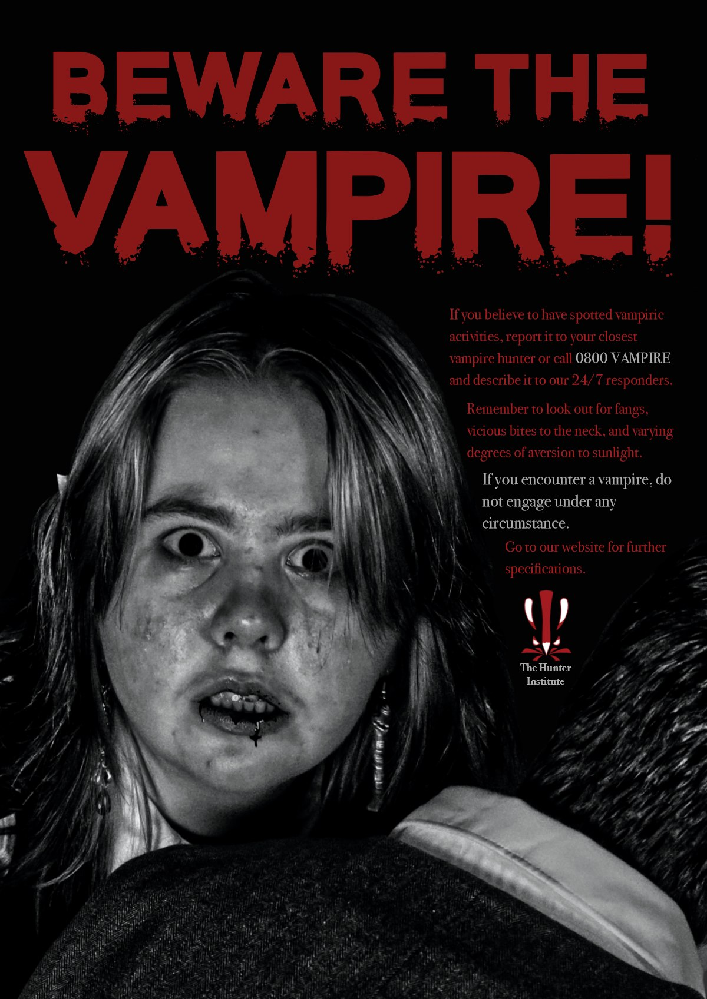
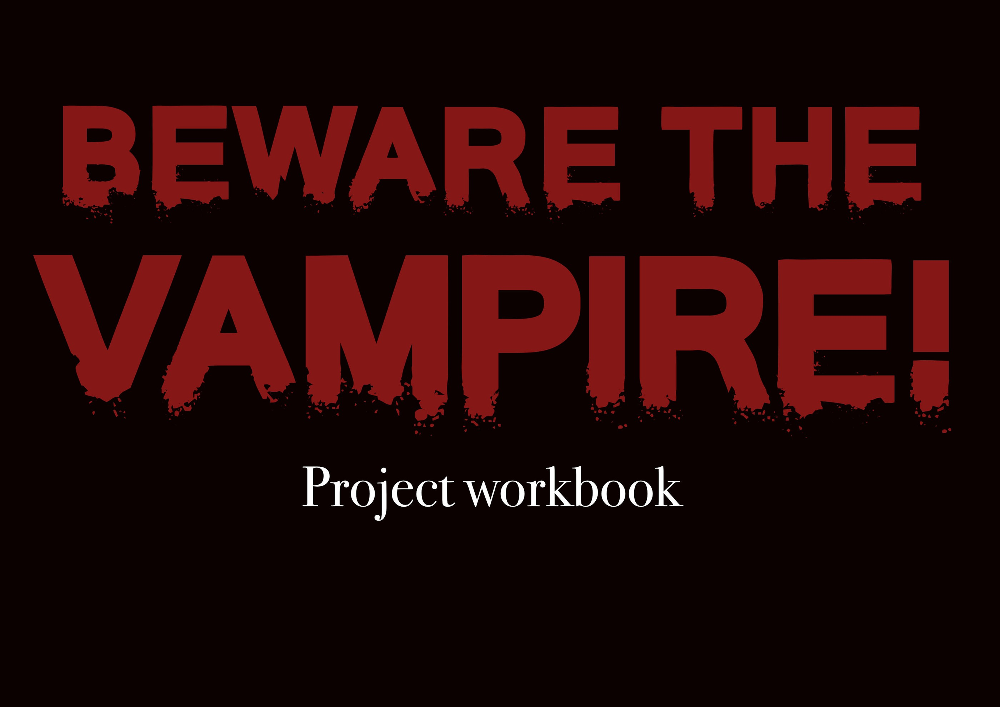

← Back to workVampires! Whether you love them or you hate them, they are part of our cultural zeitgeist and they're here to stay. And for as long as there's been vampires, there's been vampire hunters, and they need the public to be wary of them and report them to the proper authorities (the proper authorities being them). That is what is at the core of this project, Beware the Vampire! Since my friend group was unable to host sessions for a while because we were all busy, I wanted to have my class' poster project be vampire related in some way. Therefore, this project's goal was to make a PSA poster that warns the public about the danger of vampires, and to figure out what ways I could communicate that sense of danger if vampires were an actual threat.
Skills utilised for this project: Photography - Typography - Affinity - Iteration - Layout
Project workbook
Click Next, or use the left and right arrow keys, to read through the workbook.
